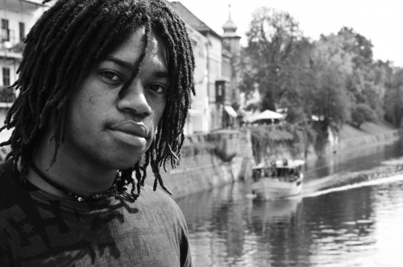
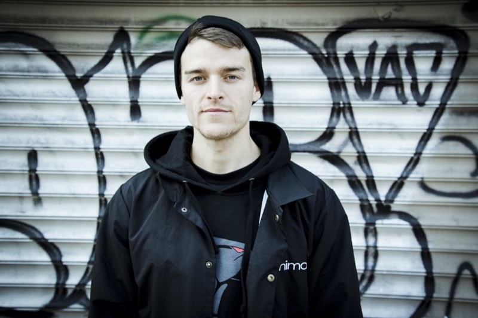

Real BMX, o concurso de vídeo BMX trago a você pelo Mundo do X-GAMES, é um concurso onde atetlas juntamente com seus video-makers saem pelas ruas gravando um pequena vídeo parte, onde será feita uma votação onde os fãs iram eleger a melhor video parte e seu favorito BMXer. esse ano tivemos várias video partes cabreiras,e o prêmio estava sendo bem concorrido entre: Brad Simms,Colin Varanyak, Kevin Peraza,Sean Ricany, Corey Martinez e Tommy Dugan.
O Fãs votaram e Brad Simms levou a melhor como o Mais favorito, já a votação dos jurados, Corey Martinez levou a medalha de ouro,deixando Brad e Colin com as de Prata e Bronze.
Brad Simms
Idade: 32 | Cidade Natal: Waldorf, Maryland | Bike: WHTHOUS Brick, Merritt parts |Video part mais recente: "Brad Simms 2016 Merritt video" by Merritt BMX | Nominee, Street Rider of the Year, NORA Cup 2008 | Filmer: Christian Riga
Colin Varanyak
Idade: 27 | Cidade Natal: Hamilton, New Jersey | Bike: Fiend, Animal Bikes parts | Video part mais recente: Ender, "Facts" by Animal Bikes | Filmer: Doeby Huynh
Corey Martinez